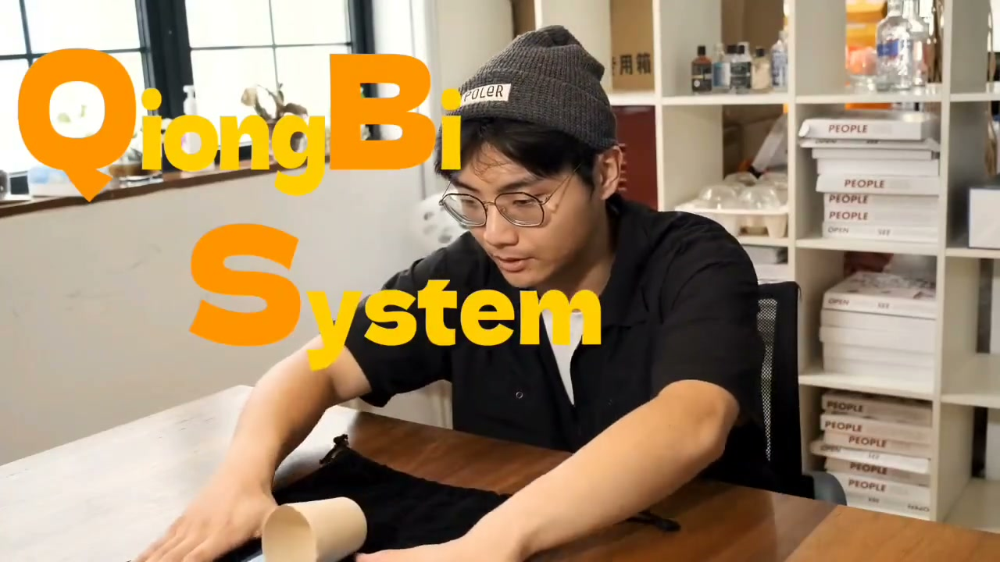
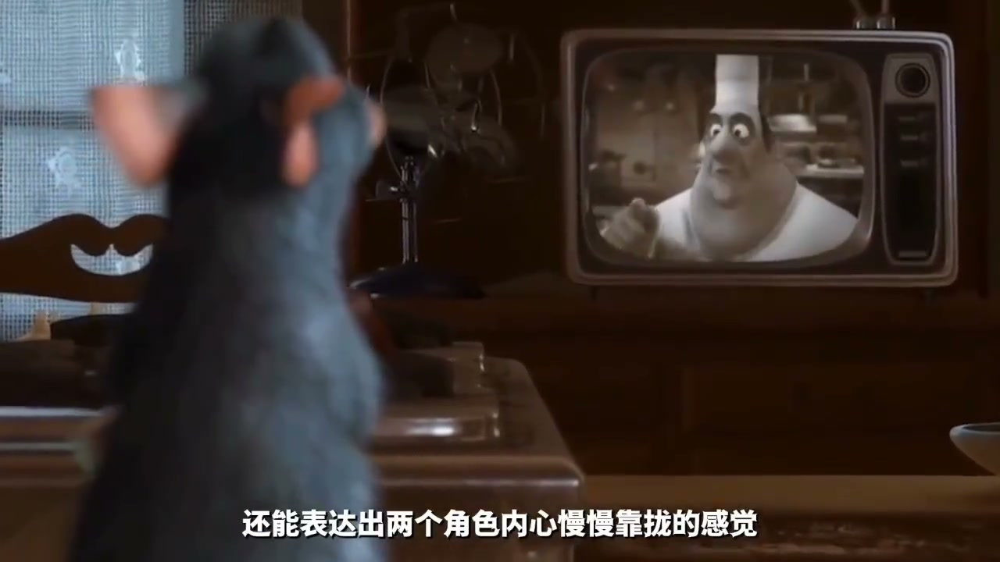

内容要点
这段视频围绕「压迫感？！一分钟教会你希区柯克变焦！」展开，按时间介绍其中的关键环节。除去故事、色调、质感。
拍摄与画面处理
除去故事、色调、质感。还有什么能让我们用手机拍摄的视频也能拥有电影感。加入电影大师的镜头后去算一个。比如关于导演之名的。西虚柯克编缴。西虚柯克在他1958年的电影《迷魂记》中。第一次向我们展示的这种前景不动。背景不断远离观众的鬼魅镜头。让我们能借助画面感受到主角惊恐的情绪。西园里是将摄影机不断推向主体的同时
[00:00] 拍摄与画面处理相关画面。
Footage on shooting and image processing.
拍摄与画面处理
广角镜头可以给我们带来更大的取景范围。让我们可以看到更广阔的背景。同时又和摄影机推进带来的人物变大相互抵消。也就带来了人物不动背景远离的效果。然而电影中的这种镜头。往往需要昂贵的设备甚至跟焦源的配合。难道我们在家里有没有办法完成了吗。没有关系。我还有手机和后期。想用手机拍出西虚老师的同一款效果
拍摄与画面处理
也可以用一块妈布加一个纸杯。打电这样的一套系统。我称之为QBS。全B系统。在拍摄的时候。我们要注意使用将物体放在画面中心。然后推手机的时候尽量保持均速。这是我们最终效果的关键。有条件的话最好拍4K。这样后期空间更大一些

[01:23] 拍摄与画面处理相关画面。
Footage on shooting and image processing.
进阶技巧
或者也可以截个图记一下。我们偷到视频开始的地方。把主体放大到跟推进结束差不多的大小。这时候软件就会自动生成一个关键针。视频就有了一个放大的效果。我们想要的效果就完成了。C3哥哥变焦的用途其实已经非常广泛了。甚至在一些动画作品中也能见到。不仅可以表现惊恐的情绪。还能表达出两个角色内心慢慢靠拢的感觉

[02:03] 进阶技巧相关画面。
Footage on advanced techniques.
总结
或者也可以截个图记一下。